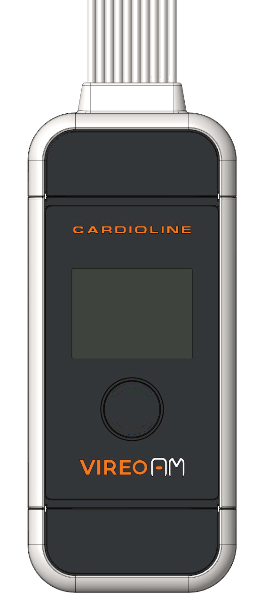

Preview only — just the device and its animation. This page's layout, background and button style are not part of the deliverable.
Everything below is copy-ready. The LED is a separate cropped sprite layered on top of a fixed base image — the base never changes, so there is no frame swap and nothing shifts. All positioning is in percent of the device box, so it holds at any render size.
led-off-transparent.png — full device, transparent background, both LEDs offled-arc-blue.png — cropped blue arc only, transparent everywhere else, real photographed sizeaspect-ratio: 553 / 1269 (the source photo's ratio)left: 42.13%; top: 63.59%; width: 17.18%; height: 3.0%1.8s cycle, steps(1, end)3.2s total, runs once, ends stabletransform/opacity — no blur/filter, no extra DOM elementsprefers-reduced-motion: reduce (see CSS)<div class="device pulse" id="device">
<img src="led-off-transparent.png" alt="Vireo AM">
<img class="arc" src="led-arc-blue.png" alt="">
</div>
<button id="replayBtn" type="button">Replay animation</button>.device {
position: relative;
width: 170px; /* any width works */
aspect-ratio: 553 / 1269; /* source photo ratio — keep this */
}
.device > img {
position: absolute;
display: block;
}
.device > img:first-child {
inset: 0;
width: 100%;
height: 100%;
}
/* LED sprite: real size/position of the photographed arc, in % of .device */
.arc {
left: 42.13%;
top: 63.59%;
width: 17.18%;
height: 3.0%;
animation: hardBlink 1.8s steps(1, end) infinite;
}
@keyframes hardBlink {
0%, 49% { opacity: 0; }
50%, 100% { opacity: 1; }
}
/* device: 2 pulses on load, then stays stable */
.device.pulse {
animation: deviceTwoPulses 3.2s ease-in-out 1;
animation-fill-mode: forwards;
}
@keyframes deviceTwoPulses {
0% { transform: scale(1); }
25% { transform: scale(1.03); }
50% { transform: scale(1); }
75% { transform: scale(1.03); }
100% { transform: scale(1); }
}
@media (prefers-reduced-motion: reduce) {
.arc { animation: none !important; opacity: 1 !important; }
.device.pulse { animation: none !important; transform: none !important; }
}const device = document.getElementById('device');
document.getElementById('replayBtn').addEventListener('click', () => {
device.classList.remove('pulse');
void device.offsetWidth; // force reflow so the animation can restart
device.classList.add('pulse');
});